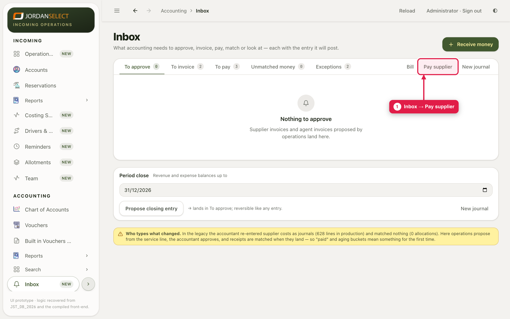
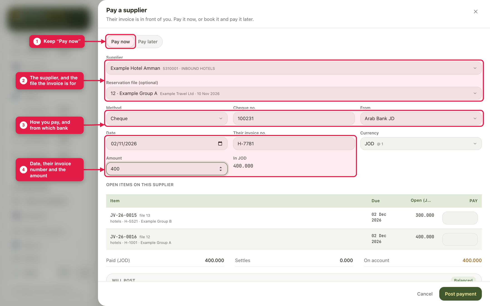
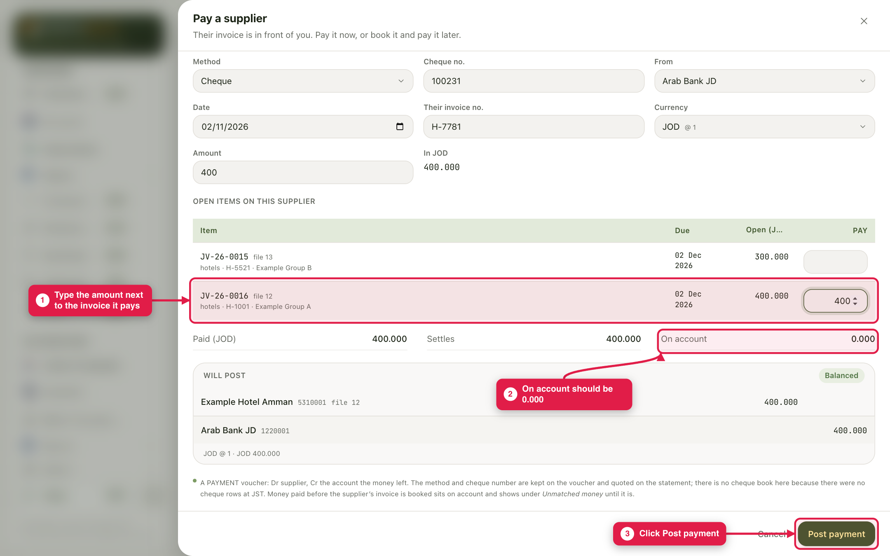
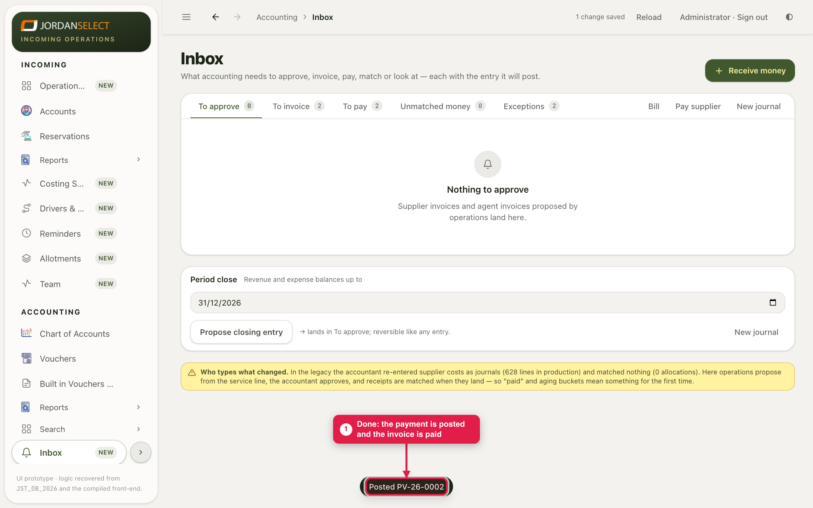

Pay one supplier now, by cheque, transfer, cash or card, and match the payment to their invoice.
WhoAccountants
WhereAccounting → Inbox → Pay supplier
Takes2 minutes
You needThe supplier’s invoice, and the cheque or transfer details
Example in this guide: Example Hotel Amman is paid 400.000 JOD by cheque 100231 from Arab Bank JD, for its invoice on file 12. To pay several suppliers at once, use guide 06 instead.
1. Open Pay supplier
1
Open Accounting → Inbox and click Pay supplier.

Pay supplier is next to Bill and New journal.
2. Fill in the details
2
Keep Pay now. Choose the Supplier and the file. Choose the Method: for a cheque, a Cheque no. box appears. Choose the bank in From. Then type the date, their invoice number and the amount.

The details filled in. Below them, the supplier’s open invoices.
3. Say which invoice it pays, and post
3
Under Open items on this supplier, type the amount in the Pay box next to the invoice it pays. This is not filled in for you. On account should then be 0.000. Click Post payment.

400.000 matched to JV-26-0016, the hotel’s invoice for file 12.
4
The system confirms, for example “Posted PV-26-0002”. The invoice leaves To pay.

Done.
On account is not 0.000The part you did not match stays on the supplier’s account and shows in Inbox → Unmatched money. That is right for a deposit paid before their invoice arrives. Otherwise, type the amounts in Pay until On account is 0.000.
Their invoice is not in the system yetChoose Pay later instead. It books their invoice to pay later, and it waits in To pay. Guide 07 shows the same thing from the Bill button.
4. Check your work
The invoice has gone from Inbox → To pay.
The supplier’s Statement shows the payment, with the cheque number.
Questions? Ask the finance manager. · Last checked: ____ · Screens shown are from a test copy of the CRM with made-up data.